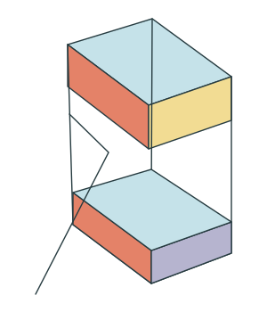
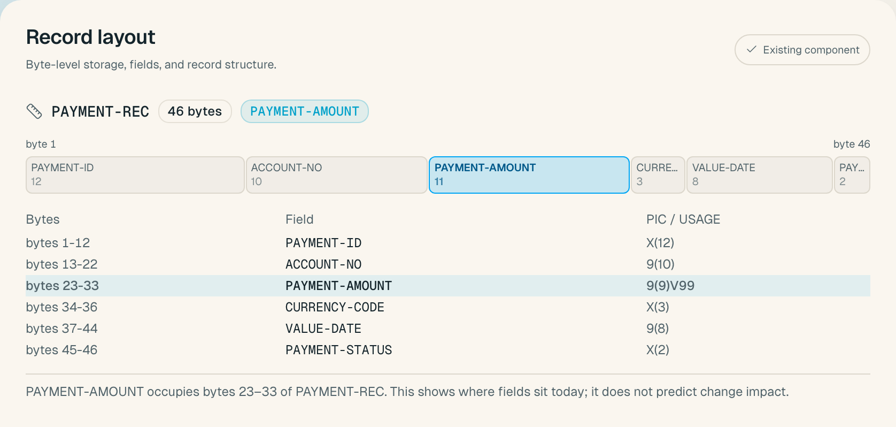
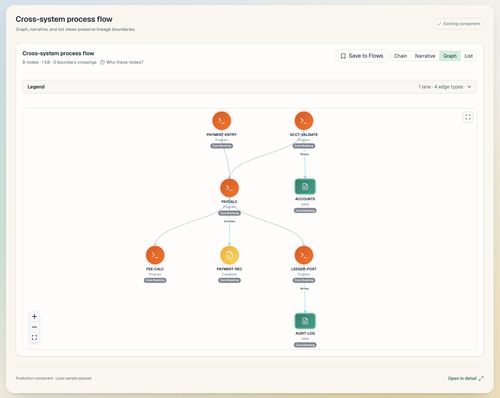
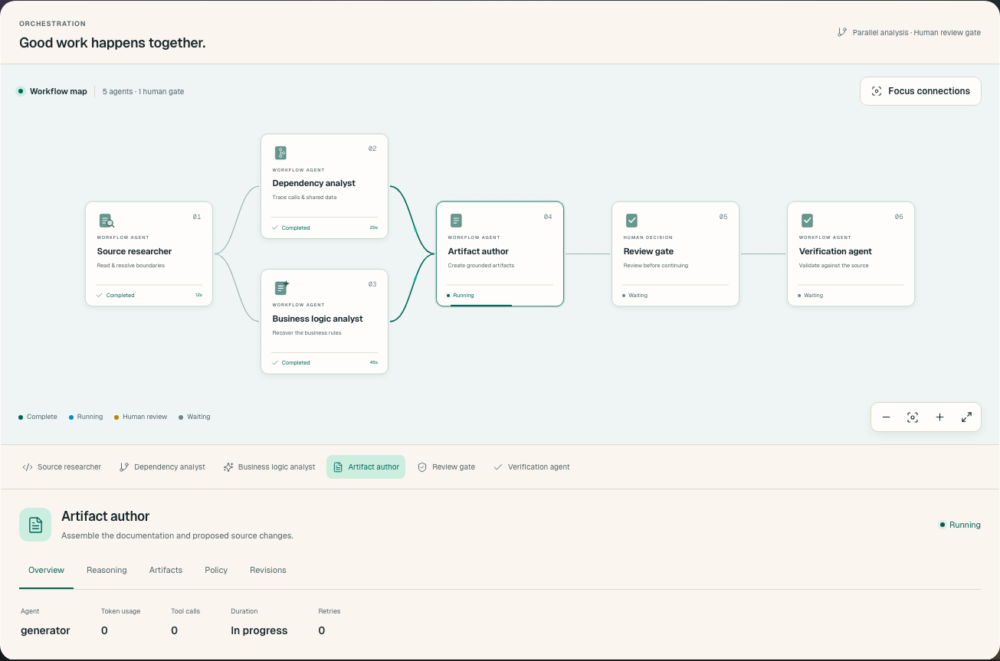
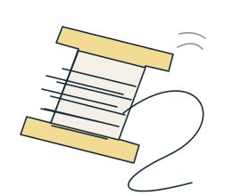

Inside Kite
Understanding,
connected to action.
Bring what the software does and what the business knows into the same picture.
Explore the product views ↗
Part 1. Make knowledge shared
Understand the business behind the rule.
Recover rules and workflows from software, then bring in the explanations people carry: why a cutoff exists, which exception matters, and how the process works in practice. Keep that understanding useful to the next person.
Try the payment example ↗
Part 2. Follow the relationships
See what change touches.
Investigate connections between programs, data and processes before deciding what to do. A relationship view supports investigation; it is not a guarantee that every possible impact has been found.
See a relationship view ↗
Part 3. Put knowledge to work
Develop with direction.
Give people and agents context and appropriate tools for extending functionality, refactoring and modernization. Proposed changes still need human review and validation of the resulting behavior.
Explore context and tools ↗
